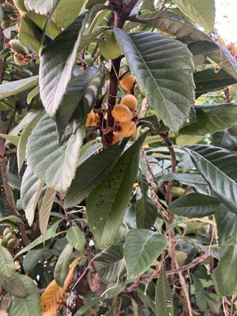
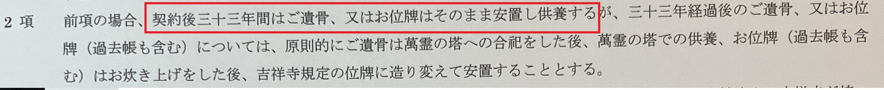

うるがいの話 ある日
最新: カバー曲【うるがいの話 ある日】とは 一日だけのプログです
『うるがいの話』の最新一日だけのプログで、通信料が少なく経済的だ。カニの画像をクリックすると全ての日付が載る『うるがいの話』サイトを表示します
|
|
【うるがいの話】 うるがい(ｳﾙｶﾞｲ urugai)とは、『もずくがに』の名前でとても大きくなります。 |
|---|---|
|
|
【カミマヤーの話】 猫のことを方言でマヤーといいます。カミマヤー（kamimayaa）とは、神の猫のことです。 |
|
【たながぁの音楽】 たながぁ（ﾀﾅｶﾞｰ tanagaa）とは手長えびのことで、何種類かあり大きいのは車 エビぐらいになります。 |

|
【ぶながぁの話】 ぶながぁ(ﾌﾞﾅｶﾞｰ bunagaa)とは、赤い髪の毛、赤い身体、そして身長は１ｍ２０ｃｍ ぐらい、川の蟹を食べているの目撃された。場所は沖縄県国頭郡大宜味村のと ある村僕の隣近所に住んでいる爺さんから、聞いた話です。 |
|
|
【ギーマの話】 ギーマ(giima)とは、山原の里山に咲くスズランに似た、 花を付けます。実は食べられます、 気が付くと口の周りが紫になっています。 |
2026年03月05日 (木）カバー曲
15:03
レナード・コーエン と
ジェフ・バックリィ の
ハレルヤ（Hallelujah）の曲は
何が違うのですか
とてもいい質問ですね 😊
同じ 「Hallelujah」 でも、
Leonard Cohen と
Jeff Buckley では、
歌詞・アレンジ・雰囲気 がかなり違います。
その一昔前、早朝ジョギンギの時に『普天間かおりのぬちぐすい
やっさー』という番組で、本人が日本語で歌っていた曲です。ネ
ットから、ジェフ・バックリィの曲を探して楽譜データを作りま
した。フと、普天間かおりさんの日本語の歌詞は、どうなってい
るのだろうかと調べるとレナード・コーエンが、原曲のようです
。エ！と、作り直しかといま調べています。実は、カバー曲でい
ろいろとてこずっています。オリビア・ニュートン・ジョンの『
ジョーリン』で楽譜情報を収集しようとしたけど、全然検索出来
なかった。あんなヒットした曲なのにと不思議に思っていたので
すヨ、で数日してから『ジョーリン』と検索したら、楽譜情報が
ありました！。調べると、原曲が『ジョーリン』だったためです
。これで、楽譜情報の検索テクニックが、増えました。
ジョギング途中に屋敷からはみ出た熟したビワです。「屋敷から
はみ出た果物を勝手に取ることはできません。」とAIは答えまし
た。

昨日、納骨堂で私の実家の永大供養の話をしたときに、契約して
から３３年面倒見てくれるよと、ヨメの妹に話したら、ヨメが違
うヨ、最後の人の３３回忌（私の母）だよと、また早合点してい
ると言っていた。契約書では、契約から３３年と書いている。ヨ
メには、言わないことにする。
